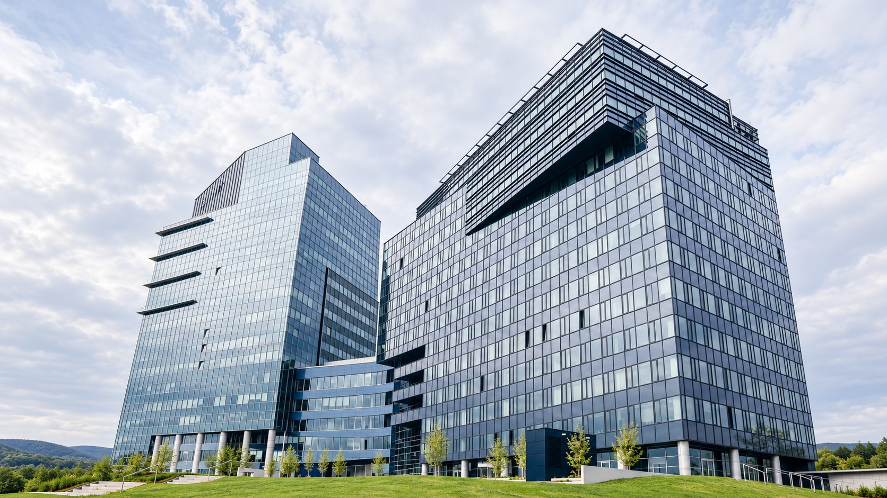

StavDM, s.r.o.
Spoľahlivý partner pre komerčné, priemyselné a verejné stavebné projekty.
Naše realizácie →O NÁS
Staviame s dôrazom na kvalitu a spoľahlivosť.
Od roku 2008 realizujeme stavebné a dokončovacie práce pre veľké komerčné, priemyselné aj verejné projekty.
Ku každej zákazke pristupujeme zodpovedne a individuálne s cieľom dosiahnuť spokojnosť obchodného partnera, dodávateľa a zákazníka.
Viac o spoločnosti →

PREHĽAD REALIZÁCIÍ
Realizácie stavieb
v poslednom období.
MAPA REALIZÁCIÍ
Projekty realizované na
Slovensku a v Čechách

SPOLUPRÁCA
Máte záujem
o spoluprácu?
Neváhajte nás kontaktovať. Radi s vami preberieme všetky možnosti a detaily.